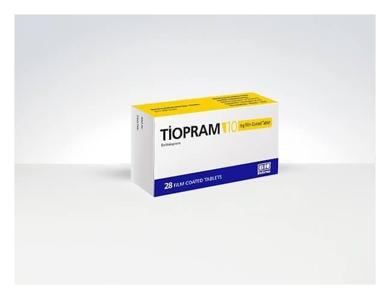

Tiopram 10 mg Film Kaplı Tablet, 28 Adet

Ne için kullanılır
KT · Bölüm 1• TİOPRAM®10 mg film kaplı tabletler, her biri 10 mg essitalopram içeren beyaz, oval, bikonveks, bir yüzü çentikli film kaplı tabletlerdir. TİOPRAM®tabletler 28 film kaplı tablet içeren ambalajlarda sunulmaktadır.
TİOPRAM®essitalopram içerir. Bu ilaç, depresyon (majör depresif durumlar) ve agorafobili (açık alan korkusu) veya agorafobisiz panik bozukluğu, sosyal anksiyete (kaygı) bozukluğu ve yaygın anksiyete bozukluğu ve obsesif-kompulsif (saplantı-zorlantı) bozukluk gibi anksiyete bozukluklarında kullanılır. Essitalopram, selektif serotonin geri alım inhibitörleri (SSRI) olarak adlandırılan bir Bu ilacı kullanmaya başlamadan önce bu KULLANMA TALİMATINI dikkatlice okuyunuz, çünkü sizin için önemli bilgiler içermektedir.
Bu kullanma talimatını saklayınız. Daha sonra tekrar okumaya ihtiyaç duyabilirsiniz. Eğer ilave sorularınız olursa, lütfen doktorunuza veya eczacınıza danışınız. Bu ilaç kişisel olarak sizin için reçete edilmiştir, başkalarına vermeyiniz. Bu ilacın kullanımı sırasında, doktora veya hastaneye gittiğinizde bu ilacı kullandığınızı doktorunuza söyleyiniz. Bu talimatta yazılanlara aynen uyunuz. İlaç hakkında size önerilen dozun dışında yüksek veya düşük doz kullanmayınız.
antidepresan grubuna dahildir. Bu ilaçlar beyindeki serotonin sistemini etkileyerek serotonin düzeylerini arttırırlar. Serotonin sistemindeki bozukluğun, depresyon ve benzeri hastalıkların gelişiminde önemli bir faktör olduğu kabul edilmektedir. İyi hissetmeye başlamanız birkaç haftayı bulabilir. Durumunuzda iyileşme görmeniz biraz zaman alsa bile, TİOPRAM®kullanmaya devam ediniz. Eğer kendinizi daha iyi hissetmezseniz ya da daha kötü hissederseniz, bunu bir doktorla konuşmalısınız.